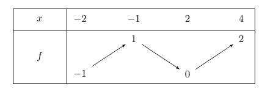

Exercices corrigés - Continuité
Continuité en un point
Enoncé 
On considère la fonction $g$ définie sur $\mathbb R$ par
$$g(x)=\left\{
\begin{array}{ll}
\frac1{\ln |x|}&\textrm{ si }x\notin\{-1,0,1\}\\
0&\textrm{ si }x=-1,0,1
\end{array}\right.$$
En quels points $g$ est-elle continue?

Enoncé
- On considère une fonction $f:\mathbb R\to\mathbb R$ définie par \[ f(x) = \begin{cases} (ax)^2& \text{si } x\leq 1,\\ a\sin(\frac{\pi}{2}x)& \text{si } x>1 \end{cases} \] où $a\in\mathbb R$ est une constante réelle. Pour quelles valeurs de $a$ la fonction $f$ est-elle continue?
- Déterminer toutes les valeurs des constantes $\alpha, \beta,\gamma\in\mathbb R$ telles que la fonction $g:\mathbb R\to\mathbb R$ suivante soit continue : \[ g(x) = \begin{cases} 1& \text{si } x\leq 0, \\ \alpha e^{-x} + \beta e^x + \gamma x(e^x - e^{-x}) & \text{si } 0<x<1, \\ e^{2-x}& \text{si } x\geq 1. \\ \end{cases} \]
Enoncé
Soit $f:\mathbb R\to\mathbb R$ définie par $f(x)=\lfloor x\rfloor +\sqrt{x-\lfloor x\rfloor }$.
Étudier la continuité de $f$ sur $\mathbb R$.
Enoncé
Soit $f:\mathbb R\to\mathbb R$ la fonction définie par
$$f(x)=\left\{
\begin{array}{ll}
1&\textrm{si }x\in\mathbb Q\\
0&\textrm{si }x\notin \mathbb Q.
\end{array}\right.$$
Montrer que $f$ est discontinue en tout point.
Exercice 5 - Une fonction définie "par morceaux" ♡ [Signaler une erreur] [Ajouter à ma feuille d'exos]
Enoncé
Soit $f,g:\mathbb R\to\mathbb R$ deux fonctions continues. On définit une fonction $h:\mathbb R\to\mathbb R$ par
$$h(x)=\left\{
\begin{array}{ll}
f(x)&\textrm{ si }x\in\mathbb Q\\
g(x)&\textrm{ si }x\in\mathbb R\backslash \mathbb Q.
\end{array}\right.$$
Démontrer que $h$ est continue en $x_0\in\mathbb R$ si et seulement si $f(x_0)=g(x_0)$.
Enoncé
Soit $f:\mathbb R\to \mathbb R$ la fonction définie par
$$f(x)=\left\{
\begin{array}{ll}
0&\textrm{si $x$ est irrationnel ou $x=0$.}\\
\frac{1}{q}&\textrm{si $x=p/q$, avec $p\in \mathbb Z^*$, $q\geq 1$ et $p\wedge q=1$ }\\
\end{array}\right.$$
En quels points $f$ est-elle continue?
Prolongement par continuité
Enoncé
Soit $f$ la fonction définie sur $\mathbb R\backslash\{-1\}$ par
$$f(x)=\frac{1+x}{x^3+1}.$$
Démontrer qu'on peut prolonger $f$ par continuité en $-1$. Préciser la valeur prise en $-1$ par ce prolongement.
Exercice 8 - Prolongement par continuité et limites usuelles? ♡ [Signaler une erreur] [Ajouter à ma feuille d'exos]
Enoncé
Les fonctions suivantes sont-elles prolongeables par continuité à $\mathbb R$ tout entier?
- $f(x)=\exp(-1/x^2)$ si $x\neq 0$;
- $g(x)=\exp(-1/x)$ si $x\neq 0$;
- $h(x)=\sin(x+1)\ln|1+x|$ si $x\neq -1$.
Exercice 9 - Prolongement par continuité et fonctions trigonométriques ♡ [Signaler une erreur] [Ajouter à ma feuille d'exos]
Enoncé
Dire si les fonctions suivantes sont prolongeables par continuité à $\mathbb R$ tout entier :
- $f(x)=\sin(1/x)$ si $x\neq 0$;
- $g(x)=\sin(x)\sin(1/x)$ si $x\neq 0$;
- $h(x)=\cos(x)\cos(1/x)$ si $x\neq 0$.
.png)
Continuité en un point - aspects théoriques
Exercice 10 - Une fonction lipschitzienne est continue ♡ [Signaler une erreur] [Ajouter à ma feuille d'exos]
Enoncé
Soit $I$ un intervalle, $k>0$ et $f:I\to\mathbb R$ vérifiant :
$$\forall (x,y)\in I^2,\ |f(x)-f(y)|\leq k|x-y|.$$
Démontrer que $f$ est continue sur $I$.
Enoncé
Démontrer que si une fonction $f:\mathbb R\to\mathbb R$ est continue en $x_0$, alors $|f|$ est continue en $x_0$. Démontrer que la réciproque est fausse.
Enoncé
Soient $f,g:\mathbb R\to\mathbb R$ deux fonctions continues.
Montrer que $\inf(f,g)$ et $\sup(f,g)$ sont continues.
Enoncé
Soit $f:\mathbb R\to\mathbb R$ une fonction continue périodique non constante. On veut prouver que $f$ admet une plus petite période, c'est-à-dire qu'il existe $T>0$ tel que
- $f(x+T)=f(x)$ pour tout $x\in\mathbb R$
- pour tout $0<\tau<T$, il existe $x\in\mathbb R$ avec $f(x+\tau)\neq f(x)$.
- Justifier que $A$ admet une borne inférieure que l'on notera $T$.
- Démontrer que $T>0$.
- Démontrer que $T$ est une période pour $f$.
Enoncé
Soit $f:I\to\mathbb R$ une fonction monotone. Montrer que l'ensemble de ses points de discontinuité est fini ou dénombrable.
Prolongements d'identité et équation fonctionnelle
Enoncé
Soient $f,g:\mathbb R\to\mathbb R$ continues.
- On suppose que, pour tout $x\in\mathbb Q$, on a $f(x)<g(x)$.
- Montrer que $f(x)\leq g(x)$ pour tout $x\in\mathbb R$.
- Montrer que l'on n'a pas nécessairement une inégalité stricte dans la question précédente.
- On suppose désormais que, pour tout $x,y\in\mathbb Q$ avec $x<y$, on a $f(x)<f(y)$. Montrer que $f$ est strictement croissante.
Enoncé
Soit $f$ une application de $\mathbb R$ dans $\mathbb R$ continue en 0, et vérifiant $f(2x)=f(x)$ pour tout
réel $x$. Montrer que $f$ est constante. Comment généraliser ce résultat si $f$ vérifie $f(ax+b)=f(x)$ pour
des réels $a$ et $b$ donnés avec $|a|\neq 1$?
Enoncé
Soit $f:\mathbb R\to\mathbb R$ continue telle que,
$$\forall (x,y)\in\mathbb R^2,\ f(x+y)=f(x)+f(y).$$
- Déterminer $f(0)$.
- Démontrer que $f$ est impaire.
- Démontrer que, pour tout $n\geq 1$ et tout $x\in\mathbb R$, $f(nx)=nf(x)$.
- Démontrer que, pour tout $n\in\mathbb Z$ et tout $x\in\mathbb R$, $f(nx)=nf(x)$.
- Démontrer que pour tout nombre rationnel $r=\frac{p}q$ et pour tout $x\in\mathbb R$, on a $$f\left(\frac pq x\right)=\frac pqf(x)$$ (on pourra écrire $p=q\times\frac pq$).
- Conclure qu'il existe $a\in\mathbb R$ tel que, pour tout $x\in\mathbb R$, $f(x)=ax$.
Enoncé
Dans cet exercice, on cherche à déterminer toutes les fonctions continues $f:\mathbb R\to\mathbb R$ telles
que, pour tout $(x,y)\in\mathbb R^2,$
$$f(x+y)+f(x-y)=2\big(f(x)+f(y)\big).$$
Soit $f$ une telle fonction.
- Que faut $f(0)$ ? Démontrer que $f$ est paire.
- Démontrer que, tout pour $x\in\mathbb R$ et tout $n\in\mathbb N,$ $f(nx)=n^2 f(x).$
- Démontrer que, pour tout $p\in\mathbb N^*,$ $f(1/p)=f(1)/p^2.$
- Démontrer que, pour tout $n\in\mathbb Z,$ et tout $p\in\mathbb N^*,$ $$f\left(\frac np\right)=\frac{n^2}{p^2}f(1).$$
- Conclure.
Enoncé
On cherche à déterminer toutes les fonctions continues $f:\mathbb R\to\mathbb R$ vérifiant, pour tout $x\in\mathbb R$, $f(2x)-f(x)=x.$
- Soit $f$ une telle fonction. Démontrer que, pour tout $x\in\mathbb R$ et pour tout $n\geq 1$, on a $$f(x)-f(x/2^n)=\sum_{k=1}^n\frac{x}{2^k}.$$
- Répondre au problème posé.
Enoncé
Soit $f:\mathbb R\to\mathbb R$ une fonction continue telle que
$$\forall x,y\in\mathbb R,\ f\left(\frac{x+y}2\right)=\frac{1}{2}\big(f(x)+f(y)\big).$$
- Vérifier que les fonctions affines sont solutions de cette équation.
- Dans cette question, on cherche à déterminer les fonctions qui sont solutions de l'équation et qui s'annulent en 0 et en 1.
- Démontrer que, pour tout entier $p\in\mathbb N$, on a $f( p)=0$.
- Démontrer que, pour tout entier $p\in\mathbb Z$, on a $f( p)=0$.
- Démontrer que, pour tout $p\in\mathbb Z$ et tout $n\in\mathbb N$, on a $f\left(\frac p{2^n}\right)=0$.
- Soit $x\in\mathbb R$. Pour $n\in\mathbb N$, on pose $x_n=\frac{\lfloor 2^n x\rfloor}{2^n}$. Démontrer que $(x_n)$ converge vers $x$.
- En déduire que $f$ est identiquement nulle.
- Dans le cas général, démontrer que $f$ est une fonction affine.
Théorème des valeurs intermédiaires - aspects pratiques
Enoncé
On considère une fonction $f$ continue définie sur $[-2;4]$ et admettant le tableau de variations suivant :

Déterminer, suivant la valeur de $k\in\mathbb R$, le nombre de solutions
de l'équation $f(x)=k$ avec $x\in[-2;4]$.Enoncé
Soit $f$ la fonction définie sur $\mathbb R$ par $f(x)=x^3-3x^2-1$. Discuter, suivant la valeur de $a\in\mathbb R$, le nombre de solutions de l'équation $f(x)=a$.

Enoncé
Montrer que l'équation $x^3+x^2-4x+1=0$ admet au moins trois solutions distinctes dans $\mathbb R$.
En utilisant l'algorithme de dichotomie, donner un encadrement d'amplitude inférieur à $10^{-1}$ de chacune de ces racines.
Enoncé
Dans cet exercice, $f$ désigne la fonction définie sur $\mathbb R\backslash\{-1,0\}$ par
$$f(x)=\frac1{x(x+1)}.$$
On note $\mathcal C_f$ la courbe représentative de $f$ dans un repère orthonormé $(O,\vec i,\vec j)$.
- Dresser le tableau de variations de $f$.
- Démontrer que $\mathcal C_f$ admet pour axe de symétrie la droite d'équation $x=-1/2.$
- Démontrer qu'il existe un unique réel strictement positif $\ell$ tel que $f(\ell)=\ell$. Démontrer que $\ell\in [1/2,1]$.
- Écrire une fonction sous Python qui permet de trouver une valeur approchée de $\ell$ avec une précision donnée.
Exercice 25 - Triangle rectangle de périmètre donné ♡ [Signaler une erreur] [Ajouter à ma feuille d'exos]
Enoncé
On cherche à déterminer s'il existe un triangle rectangle $ABC$, rectangle en $A$, tel que $BC=12$ et dont le périmètre est égal à $28$.
On note $x$ la longueur $AC$.
- Déterminer une expression du périmètre $P(x)$ du triangle $ABC$.
- Étudier la fonction $P(x)$ sur son domaine de définition.
- En déduire le nombre de valeurs possibles pour $AC$, ainsi qu'une valeur approchée de ces valeurs à $10^{-2}$ près.
Enoncé
On considère l'équation $(E_a)$, d'inconnue $x>0$,
$$\ln(x)=ax.$$
- Démontrer que si $a\leq 0$, l'équation $(E_a)$ admet une unique solution et que cette solution appartient à $]0,1]$.
- Démontrer que si $a\in ]0,1/e[$, l'équation $(E_a)$ admet exactement deux solutions.
- Démontrer que si $a=1/e$, l'équation $(E_a)$ admet une unique solution dont on précisera la valeur.
- Démontrer que si $a>1/e$, l'équation $(E_a)$ n'admet pas de solution.

Enoncé
Démontrer que l'équation $\cos x=\frac 1x$ admet une infinité de solutions dans $\mathbb R_+^*$.
Enoncé
Déterminer le nombre de solutions de l'équation $\tan(x)+\tan(2x)+\tan(3x)=0$ sur l'intervalle $[0,\pi]$.
Exercice 29 - Application à l'étude de fonctions ♡ [Signaler une erreur] [Ajouter à ma feuille d'exos]
Enoncé
Soit $g$ la fonction définie sur $\mathbb R$ par $g(x)=2x^3-3x^2-1$.
- Dresser le tableau de variations de $g$.
- Montrer que l'équation $g(x)=0$, avec $x\in\mathbb R$, admet une unique solution $\alpha$. Donner un encadrement de $\alpha$ à $10^{-1}$ près.
- Déterminer le signe de $g(x)$ sur $\mathbb R$.
- Soit $f$ la fonction définie sur $]-1;+\infty[$ par $$f(x)=\frac{1-x}{x^3+1}.$$ Calculer $f'(x)$ puis exprimer le en fonction de $g$, pour $x\in]-1;+\infty[$.
- En déduire le signe de $f'$, puis les variations de $f$ sur $]-1;+\infty[$.

Enoncé
Un patient prend un médicament (par voie orale). On admet que la concentration par litre de sang du principe actif (en mg par litre) peut être modélisé par la fonction $f(t)=4te^{-0,\!5 t}$, où $t$ est le temps écoulé (en heures) depuis la prise du médicament. On estime que le médicament est actif lorsque sa concentration dans le sang est supérieur ou égal à $1$ mg par litre.
- Dresser le tableau de variations de la fonction $f$ sur $[0,+\infty[$.
- Démontrer qu'il existe deux temps $t_0$ et $t_1$ de sorte que le médicament ne soit pas actif entre $0$ et $t_0$, soit actif entre $t_0$ et $t_1$, et ne soit plus actif après $t_1$.
- Donner un encadrement d'amplitude $10^{-1}$ de la durée pendant laquelle le médicament est actif.
Enoncé
Démontrer qu'il existe à tout moment deux points opposés sur l'équateur où les températures sont égales. On pourra considérer que la température à l'équateur est une fonction continue de la longitude.
Exercice 32 - Une suite définie comme étant la racine d'un polynôme ♡ [Signaler une erreur] [Ajouter à ma feuille d'exos]
Enoncé
Pour $n\geq 1$, on considère le polynôme $P_n(X)=X^n+X^{n-1}+\dots+X-1$.
- Démontrer que $P_n$ possède une seule racine dans $\mathbb R_+$, que l'on note $u_n$.
- Démontrer que la suite $(u_n)$ est décroissante, et en déduire qu'elle converge.
- Démontrer que, pour tout $n\geq 1$, $u_n\geq\frac 12$.
- Soit $\rho\in ]1/2,1[$. Démontrer que $\lim_{n\to+\infty}P_n(\rho)>0$.
- Démontrer que $(u_n)$ converge vers $\frac 12$.
Enoncé
Un cycliste parcourt 30 km en une heure. Démontrer qu'il existe un intervalle de temps de 10 minutes tel
que le cycliste a parcouru 5 km. Existe-t-il toujours un intervalle de temps de 40 minutes durant lequel il aura parcouru 20km?
Exercice 34 - Non continue et vérifie pourtant la propriété des valeurs intermédiaires ♡ [Signaler une erreur] [Ajouter à ma feuille d'exos]
Enoncé
On considère la fonction $f$ définie sur $[0,1]$ par
$$f(x)=\left\{\begin{array}{ll}
0&\textrm{si }x=0\\
\sin\left(\frac 1x\right)&\textrm{sinon.}
\end{array}
\right.$$
- Démontrer que la fonction $f$ n'est pas continue en 0.
- On souhaite prouver que $f$ vérifie la propriété des valeurs intermédiaires, c'est-à-dire que pour tous réels $a<b$, et pour tout $y$ compris entre $f(a)$ et $f(b)$, il existe $c\in]a,b[$ tel que
$y=f(c)$.
- Traiter le cas $a>0$.
- Si $a=0$, justifier l'existence de $d\in ]a,b[$ tel que $f(d)=f(0)$. Conclure.
Enoncé
On considère pour $n\in\mathbb N$ le polynôme $P_n(x)=\sum_{k=0}^n \frac{x^k}{k!}$. Démontrer que $P_n$ n'a pas de racines réelles si $n$ est pair, et que $P_n$ admet une unique racine réelle si $n$ est impair.
Théorème des valeurs intermédiaires - aspects théoriques
Enoncé
Démontrer que tout polynôme de degré impair admet au moins une racine.
Enoncé
Les propositions suivantes sont elles vraies ou fausses :
- L'image par une fonction continue d'un intervalle ouvert est un intervalle ouvert.
- L'image par une fonction continue d'un intervalle fermé est un intervalle fermé.
- L'image par une fonction continue d'une partie bornée est une partie bornée.
- L'image réciproque par une fonction continue d'un intervalle est un intervalle.
Enoncé
Soit $f:\mathbb R\to\mathbb R$ continue telle que, pour tout $x\in\mathbb R$, on a $f(x)^2=1$.
Démontrer que $f=1$ ou $f=-1$.
Enoncé
Que dire d'une fonction $f:I\to\mathbb R$, où $I$ est un intervalle, continue,
et ne prenant qu'un nombre fini de valeurs?
Enoncé
Soit $f:[a,b]\to \mathbb R$ une fonction continue, et soient $p,q$ deux réels strictement positifs.
Démontrer qu'il existe $c\in[a,b]$ tel que
$pf(a)+qf(b)=(p+q)f(c).$
Enoncé
Soit $f:[0,1]\to[0,1]$ une fonction continue. Démontrer que $f$ admet toujours au moins un point fixe.
Enoncé
Soit $a,b\in\mathbb R$ avec $a<b$ et soit $f\in\mathcal C([a,b[,\mathbb R)$ une fonction strictement croissante sur $[a,b[$ et vérifiant $f(a)\leq 0$, $\lim_{x\to b}f(x)=+\infty$.
- Démontrer que, pour tout $n\in\mathbb N$, l'équation $f(x)=n$ admet une unique solution $x_n\in[a,b[$.
- Étudier la monotonie de la suite $(x_n)$.
- Étudier la convergence de la suite $(x_n)$ et déterminer sa limite éventuelle.
Enoncé
Soit $f$ une fonction continue de $\mathbb R$ dans $\mathbb R$.
On suppose que $|f|$ admet une limite (finie) en $+\infty$. Prouver que $f$
admet également une limite en $+\infty$.
Enoncé
Soit $f,g:[0,1]\to[0,1]$ deux fonctions continues telles que $g\circ f=f\circ g$. On veut démontrer qu'il existe un réel $c$ tel que $f(c)=g(c)$. On rappelle que $f$ admet un point fixe $s\in[0,1]$. On définit par récurrence une suite $(u_n)$ par $u_0=s$ et $u_{n+1}=g(u_n)$.
- Démontrer que, pour tout $n\geq 0$, $u_n$ est un point fixe de $f$.
- On suppose que la suite $(u_n)$ est monotone. Démontrer le résultat.
- On suppose que la suite $(u_n)$ n'est pas monotone.
- Démontrer qu'il existe $u,v\in[0,1]$ tels que $(f-g)(u)\cdot (f-g)(v)\leq 0$.
- Conclure.
Enoncé
Soit $f$ une fonction continue sur un segment $[a,b]$.
On suppose que $f$ vérifie la propriété suivante :
pour tous les points $c<d$ de l'intervalle, il existe $e$ compris entre $c$ et $d$ tel que $f(e)=f(a)$ ou $f(e)=f(b)$. Montrer que $f$ est constante.
Enoncé
Soit $f:\mathbb R_+\to \mathbb R_+$ continue. On suppose que $x\mapsto \frac{f(x)}x$ admet une limite
finie $l<1$ en $+\infty$. Démontrer que $f$ admet un point fixe.
Exercice 47 - Mêmes limites donc non injective! ♡ [Signaler une erreur] [Ajouter à ma feuille d'exos]
Enoncé
Soit $f:\mathbb R\to\mathbb R$ une fonction continue telle que $\lim_{-\infty}f=\lim_{+\infty}f.$ Démontrer que $f$ n'est pas injective.
Enoncé
Soit $f$ une fonction continue sur $[0,1]$, à valeurs dans $\mathbb R$, et telle que $f(0)=f(1)$.
- Montrer que pour tout entier $n\geq 2$, il existe $c_n\in\left[0,1-\frac 1n \right]$ tel que $$f(c_n)=f\left(c_n+\frac 1n\right).$$
- Montrer que si l'on remplace $1/n$ par un réel $\alpha\in]0,1[$ tel que $1/\alpha$ n'est pas un entier, le résultat précédent n'est plus vrai. On pourra considérer la fonction $f$ définie sur $[0,1]$ par $$f(x)=\cos\left(\frac{2\pi x}\alpha\right)-x\left(\cos\left(\frac{2\pi}{\alpha}\right)-1\right).$$
Exercice 49 - Tout intervalle dans l'image est l'image d'un intervalle! ♡ [Signaler une erreur] [Ajouter à ma feuille d'exos]
Enoncé
Soit $f:\mathbb R\to\mathbb R$ une fonction continue, et soit $\alpha<\beta$
des réels avec $\alpha,\beta\in f(\mathbb R)$. Démontrer qu'il existe $a<b$ tel que $f([a,b])=[\alpha,\beta]$.
Théorème des bornes atteintes
Enoncé
Soit $f$ la fonction définie sur $\mathbb R$ par $f(x)=(x^4+3x^2)e^{-x^2}$.
- Déterminer la limite de $f$ en $+\infty$, en $-\infty$.
- Démontrer qu'il existe un réel $A>0$ tel que, pour tout $x\geq A$, on a $|f(x)|\leq 1$.
- Démontrer qu'il existe un réel $B<0$ tel que, pour tout $x\leq B$, on a $|f(x)|\leq 1$.
- Démontrer que la fonction $f$ est bornée sur $\mathbb R$.
Enoncé
Soit $f,g:[a,b]\to\mathbb R$ continues telles que $f(x)>g(x)$ pour tout $x\in[a,b]$.
- Montrer qu'il existe $\delta>0$ tel que $f(x)\geq g(x)+\delta$ pour tout $x\in[a,b]$.
- On suppose de plus que $g(x)>0$ pour tout $x\in[a,b]$. Montrer qu'il existe $k>1$ tel que $f(x)\geq kg(x)$ pour tout $x\in[a,b]$.
- Les résultats restent-ils vrais si on remplace le segment $[a,b]$ par $\mathbb R$?
Enoncé
Soit $f:[0,+\infty[\to\mathbb R$ continue admettant une limite (finie) en $+\infty$. Montrer que $f$ est bornée sur $[0,+\infty[$.
Enoncé
Soit $f:\mathbb R\to\mathbb R$ une fonction continue telle que
$\lim_{-\infty}f=\lim_{+\infty}f=+\infty$. Démontrer que $f$ admet un minimum sur $\mathbb R$.
Enoncé
Soit $f:\mathbb R_+\to\mathbb R$ une fonction continue surjective.
- Démontrer que $0$ admet un nombre infini d'antécédents.
- Plus généralement, démontrer que tout réel admet un nombre infini d'antécédents.
Exercice 55 - Le maximum d'une fonction est continue ♡ [Signaler une erreur] [Ajouter à ma feuille d'exos]
Enoncé
Soit $f:\mathbb R_+\to\mathbb R$ une fonction continue. On peut donc définir, pour tout $x\geq 0$,
$\displaystyle F(x)=\max_{t\in [0,x]}f(t).$
Démontrer que la fonction $F$ est continue.